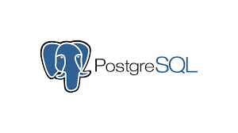

In these projects, I used SQL queries to prepare data for analysis. I inserted new columns to add essential metrics, deleted unnecessary columns to streamline the dataset, and dropped redundant tables to reduce clutter. This data cleaning ensured that only relevant information remained, making the analysis more efficient and enabling clearer insights into data trends.

Data Exploration of COVID-19 in SQL Server" involves analyzing COVID-19 data—such as case numbers, deaths, recoveries, and vaccination rates using SQL to uncover patterns and insights. This approach provides a comprehensive view of the data, helping to identify trends, make comparisons, and support data-driven decision-making.

Data Exploration of COVID-19 in Tableau" leverages Tableau’s visualization capabilities to uncover trends and insights within COVID-19 data. This Tableau-driven approach enables dynamic and visually engaging data analysis, making it easier to identify patterns, compare regions, and support data-driven decision-making.
This project focuses on the cleansing and analysis of Diwali sales data, examining product profits, losses, and other key metrics. I used Pythonand it's libraries such as Pandas, NumPy, Seaborn and Matplotlib to prepare, analyze, and visualize the data. These tools enabled me to gain valuable insights into sales performance and trends across products.
Created a PowerBI dashboardto provide comprehensive business insights. This dashboard highlights key metrics and trends, helping to analyze business performance and identify areas for growth. It offers actionable insights, guiding strategic decisions and reforms to drive business improvement.
In this project, I scraped product information from Flipkart, including product names, ratings, prices, and other details. Using Python and Jupyter Notebook, I accessed product URLs and employed a user-agent string to connect with the site and extract the necessary data. The scraped information was then saved as a CSV file for further analysis.

Conducting an analysis of a music store using PostgreSQL. The analysis focuses on various metrics, such as:
The most listened-to music by an individual.
The top users who spend the most time listening to music.
People who prefer rock music, and other specific genre-based preferences.